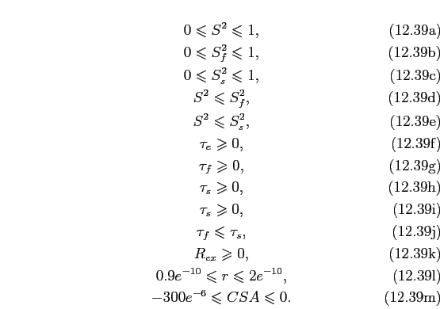

Next: The diffusion seeded paradigm Up: Model-free analysis Previous: The rest Contents Index
By presenting a systematic methodology for obtaining a consistent model-free description of the dynamics of the system, the manuscript of () revolutionised the application of model-free analysis. The full protocol is presented in Figure  .
.
All of the data analysis techniques required for this protocol can be implemented within relax. The chi-squared distributions required for the chi-squared tests are constructed by Modelfree4 from the Monte Carlo simulations. If the optimisation algorithms and Monte Carlo simulations built into relax are utilised, then the relax script will need to construct the chi-squared distributions from the results as this is not yet coded into relax. The specific step-up hypothesis testing model selection of () is available through the model_selection() user function. Coding the rest of the protocol into a script should be straightforward.
|
 |
Edward d'Auvergne 2008-09-29